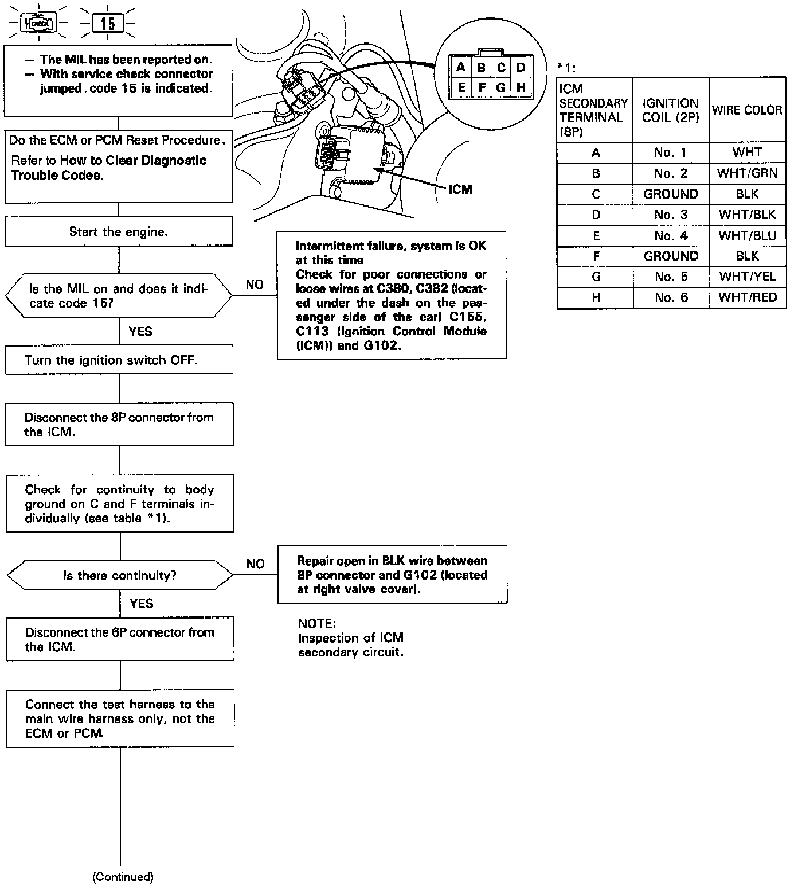
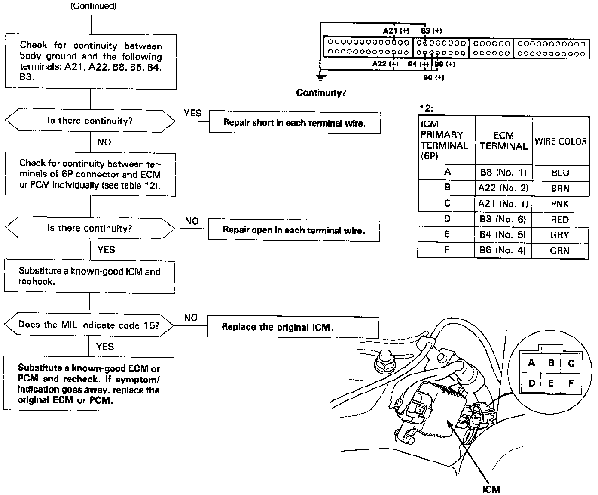

Operation CHARM
: Car repair manuals for everyone.
Home
>>
Acura
>>
1994
>>
Legend Sedan V6-3206cc 3.2L SOHC FI
>>
Repair and Diagnosis
>>
A L L Diagnostic Trouble Codes ( DTC )
>>
Testing and Inspection
>>
Manufacturer Code Charts
>>
Engine Control System
>>
DTC 15
DTC 15
DTC 15 - IGNITION OUTPUT SIGNAL

PART 1 OF 2

PART 2 OF 2
The Malfunction Indicator Lamp (MIL) indicates Diagnostic Trouble Code (DTC) 15: A problem in the Ignition Output Signal circuit.